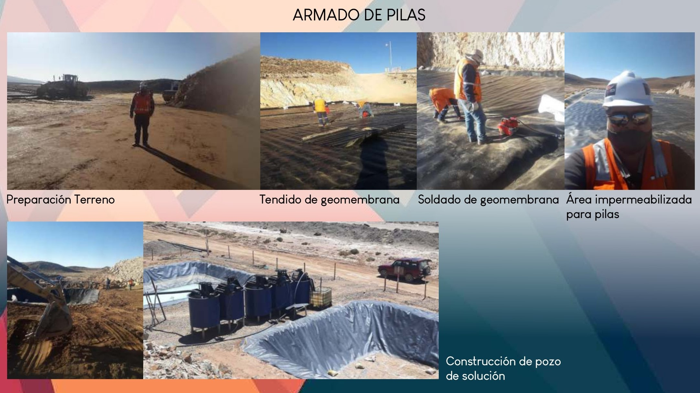

GOLDTECH es el resultado de la unión de profesionales con amplia experiencia en la industria del oro y metales preciosos, fusionados en tres empresas en Bolivia, Argentina y México.
GOLDTECH tiene un firme compromiso con la PRODUCCIÓN SUSTENTABLE Y LA EFICIENCIA, a fin de poner TECNOLOGIAS al alcance de empresas pequeñas y medianas, como así también a organizaciones cooperativas de todo Latinoamérica y África. Estas TECNOLOGIAS permiten acceder a estándares de calidad y costos de producción competitivos para los mercados internacionales.
Tecnologias para procesamiento de materiales preciosos
GOLDTECH X1
Las plantas GOLDTECH X1 son diseñadas para recuperar y refinar ORO, PLATA, PLATINO, PALADIO, RODIO y otros metales preciosos, mediante una baja inversión que permite alcanzar estándares internacionales de alta calidad.
A partir de esta tecnología, aplicable a nivel mundial, pequeñas y medianas empresas mineras, recicladores de metales y joyas, recicladores de residuos electrónicos, acopiadores y exportadores tienen la posibilidad de lograr un ALTO VALOR AGREGADO a sus productos.
RECUPERACION DE ORO FINO Y ULTRAFINO
PROCESO DE FLOTACIÓN Y LIXIVIACIÓN DE ORO
El Reactor de Lixiviación GoldTech (GLR) es una solución de procesamiento de alto rendimiento diseñado para mejorar la recuperación de mineral de concentrados Gravimétricos y de Flotación. Combinando un producto de larga vida con bajo costo de operación, el GLR es instalado después de la concentración en un circuito para maximizar el proceso recuperación de oro fino en cualquier operación minera. Extensas pruebas del GLR en el campo han mostrado que más del 90% del mineral objetivo es recuperado a través de un proceso simple, completamente simplificado y que es fácilmente incorporado en la operación de recuperación para obtención de oro metálico. GoldTech diseña y provee circuitos personalizados completos de recuperación incorporando, concentración por otación de oro, lixiviación, proceso CIP (carga en carbón activado) y electrodeposición de oro, basados en los requerimientos del proyecto. GoldTech disponible de sus propios equipos de laboratorio, para realizar pruebas de lixiviación en los reactores GLR, los cuales generan datos confiables para dimensionar hasta una escala de operación comercial. Proveemos también máquinas piloto para realizar pruebas a escala en el campo
RECUPERACION DE ORO FINO Y ULTRAFINO
PROCESO DE LIXIVIACIÓN DE ORO POR PERCOLACIÓN
La cianuración en pilas se emplea para procesar minerales de oro y plata de baja ley. La cianuración en pilas es una lixiviación por percolación del mineral acopiado sobre una superficie prepara da par a colectar las soluciones (geomembrana).
Su fexibilidad operativa permite abarcar tratamientos que pueden durar semanas, meses y hasta años, dependiendo del tamaño del mineral con que sé este trabajando. La solución enriquecida de oro y plata se colecta sobre el piso impermeable, dispuesto en forma ligeramente inclinada que hace que uya hacia la poza de almacenamiento, desde ahí se alimenta el circuito de recuperación.
